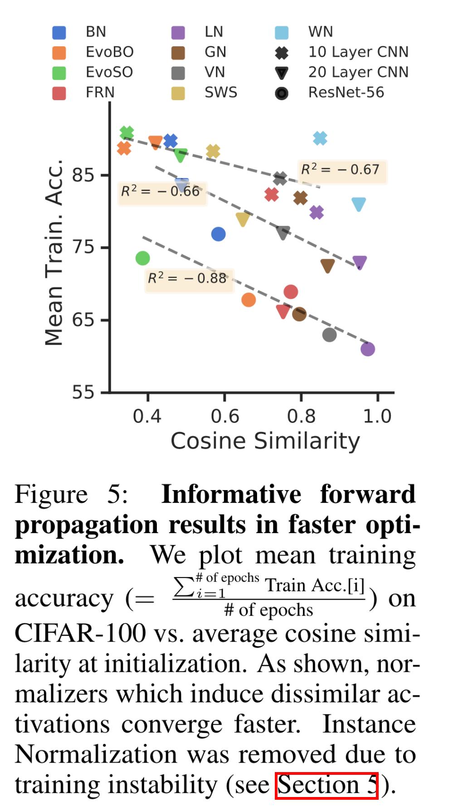

Beyond BatchNorm
Contents
Beyond BatchNorm#
제목: Beyond BatchNorm: Towards a Unified Understanding of Normalization in Deep Learning
저자: Lubana, Ekdeep S, Robert Dick, and Hidenori Tanaka
연도: 2021년
학술대회: NeurIPS
링크: https://proceedings.neurips.cc/paper/2021/hash/2578eb9cdf020730f77793e8b58e165a-Abstract.html
키워드: Batch normalization, group normalization
Introduction#
BatchNorm, LayerNorm, InstanceNorm, GroupNorm 등 normalization layers을 이해하기 위한 많은 연구들이 있었다. 하지만 해당 연구들은 normalization layer들의 일반적인 원리와 효과를 설명하기 보다는 개별 normalization layer를 분석하는데 지나지 않았다.
Normalization layers는 크게 2가지로 분류될 수 있다.
Activation-based normalizers
Activation space (레이어의 입력)에 적용되는 normalizers로서, BatchNorm, LayerNorm, InstanceNorm, GroupNorm 등이 이에 속한다.
Parametric-based normalizers
네트워크 파라미터에 적용되는 normalizers로서 Weight Normalization, Scaled Weight Standardization 등이 이에 해당한다.
이 논문에서는 잘 알려진 BatchNorm의 성질을 다른 normalization layers로 확장하여 이해하는 것을 목표로 한다. 논문에서 다음 세 가지 성질을 분석하였다.
Stable Forward Propagation
Activation-based normalizers들은 ResNets에서 activations들의 분산이 무작정 커지는 것을 방지할 수 있었다. 이는 parametric normalizers에서는 볼 수 없는 성질이다.
Informative Forward Propagation
다른 입력 데이터에 대해서는 다른 activation을 만드는 능력이 있다. 즉, 데이터를 잘 구분되게 만드는 능력이 있다. GroupNorm의 group 수에 따라 이 정도가 달라진다.
Stable Backward Propagation
InstanceNorm와 같이 단일 데이터 또는 단일 채널 (feature) 내에서 normalization을 하는 방법은 gradient explosion을 겪을 수 있다.
Stable Forward Propagation#
Normalization layers를 사용하면 레이어를 통과함에 따라 activations의 variance가 지수적으로 증폭되는 것을 방지할 수 있다고 한다. Activations을 계속 normalization 해주니 평범한 CNN에 대해서는 당연한 사실이다. 하지만, ResNet에 대해서는 residual path 때문에 당연하지 않을 수 있다. 다른 논문에서는 레이어를 지남에 따라 activations의 평균 분산이 지수적으로 증가하지만 않으면 stable 순전파가 가능하다는 것이 입증되었고, 이 논문에서는 activation-based normalizers을 사용하면 ResNet에서 레이어를 지남에 따라 activations의 분산이 선형적으로 증가하는 것을 보였다. 이는 parametric-based normalizers는 없는 기능이다.
Informative Forward Propagation#
이 section은 normalization layers가 유용한 정보를 순전파할 수 있다는 것에 관해 설명한다. 유용한 정보가 무엇인지 설명하기 위해 딥러닝이 겪는 rank collapse 문제를 먼저 설명하면 좋을 것 같다. Rank collapse란 서로 다른 입력 데이터가 레이어를 통과할 수록 서로 비슷한 activation를 갖게 되는 문제이다. 이 문제를 경험적으로 보이기 위하여 다양한 CNN의 linear classifier 직전 레이어의 activations 사이의 코사인 유사도와 학습 성능을 시각화하면 다음과 같았다. Activations 사이의 코사인 유사도가 높을수록 모델의 훈련 성능이 떨어지는 것을 확인할 수 있었다. 훈련 성능을 보여준 이유는 rank collapse에 의한 평균 훈련 속도가 저하되는 것을 보이기 위함이다 (그림 설명 참조).
{kind=link}
Normalization layers가 서로 다른 입력 데이터에 대해서 서로 다른 activations을 만드는 효과가 있다고 한다. BatchNorm에 대해서는 이미 이 효과가 입증되었다고 한다 [2]. BatchNorm은 임의 초기화된 네트워크의 classifier 직전 레이어의 activations들의 covariance matrix \(Y Y^\top\)가 최소 \(\Omega(\sqrt{\textit{width}})\)만큼 큰 rank를 갖는다는 것이 증명되었다. 여기서 width는 fc layer이전 CNN 레이어의 너비 (채널 수)를 의미한다. 선형대수에 의하면 Covariance matrix의 rank는 correlation matrix \(Y^\top Y\)와 같기 때문에 correlation matrix의 rank 또한 크다는 것이다. 참고로 rank가 크다는 것은 해당 matrix의 basis가 서로 다른 방향을 갖고 있는 것을 의미한다. 즉, BatchNorm은 다양한 activations 만들어내는 효과가 있다.
위 내용은 다른 논문에서 BatchNorm에 대해서만 증명된 것이고, 이 논문에서는 이를 확장하여 GroupNorm에 대해서도 비슷한 성질이 있는 것을 증명하였다. GroupNorm에 대해서는 fc layer 직전 레이어의 activations들의 covarianace matrix가 최소 \(\Omega(\sqrt{\textit{width}/\textit{Group Size}})\)의 랭크를 갖는다고 한다.
Stable Backward Propagation#
이전 두 섹션은 normalization layers들의 장점에 대해 다뤘다면, 이번 섹션은 normalization layer가 겪는 문제에 대해서 다룬다. 이 부분도 정말 신기하다. 최근에 입증된 사실로, BatchNorm을 사용하는 네트워크의 경우 학습 초기에 네트워크가 깊을수록 앞단 레이어의 gradient의 norm이 exploding 할 수 있다는 것이다.
BatchNorm이 있을 경우 로스에 대한 한 레이어의 activation의 그레디언트에 activation의 표준 편차의 역수텀이 붙게 된다. 네트워크 파라미터가 평균이 0인 Gaussian 분포에서 샘플링되었을 경우 학습 초기 activations의 표준 편차가 1보다 작다고 한다. 그러면 표준편차의 역수를 1보다 커진다. 매 레이어마다 그레디언트가 역전파되면서 1보다 큰 값이 곱해져서 네트워크의 앞단의 그레디언트가 증폭되게 된다고 한다.
이 논문에 따르면 GroupNorm의 group size가 클수록 이 문제가 완화된다고 한다. 따라서 Gropu size가 1인 케이스인 InstanceNorm의 경우 깊은 네트워크일수록 학습이 굉장히 불안정해지게 된다고 한다.
Reference#
[1] Lubana, Ekdeep S, Robert Dick, and Hidenori Tanaka. “Beyond BatchNorm: Towards a Unified Understanding of Normalization in Deep Learning.” In Advances in Neural Information Processing Systems, 34:4778–91. Curran Associates, Inc., 2021. https://proceedings.neurips.cc/paper/2021/hash/2578eb9cdf020730f77793e8b58e165a-Abstract.html.
[2] Daneshmand, Hadi, Jonas Kohler, Francis Bach, Thomas Hofmann, and Aurelien Lucchi. “Batch Normalization Provably Avoids Ranks Collapse for Randomly Initialised Deep Networks.” In Advances in Neural Information Processing Systems, edited by H. Larochelle, M. Ranzato, R. Hadsell, M. F. Balcan, and H. Lin, 33:18387–98. Curran Associates, Inc., 2020. https://proceedings.neurips.cc/paper/2020/file/d5ade38a2c9f6f073d69e1bc6b6e64c1-Paper.pdf.